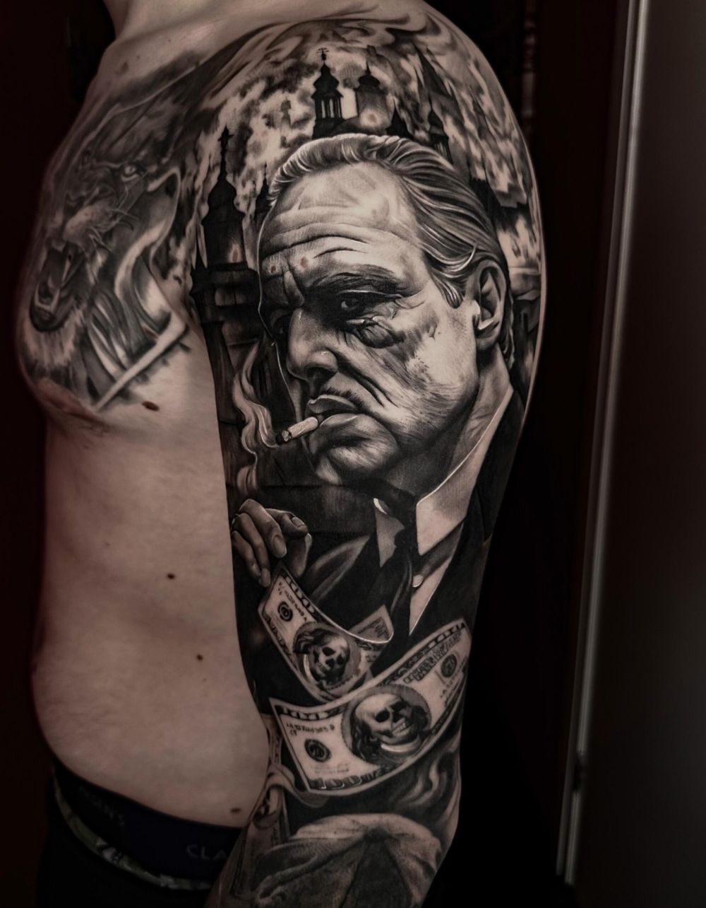
Melvin
Black & grey · eigenaar
Grote black & grey tattoos met perfecte lijnen en vloeiende, realistische schaduwen. Al sinds zijn 18e volledig toegewijd aan het vak.
Grote stukken en sleevesMeer over Melvin ›
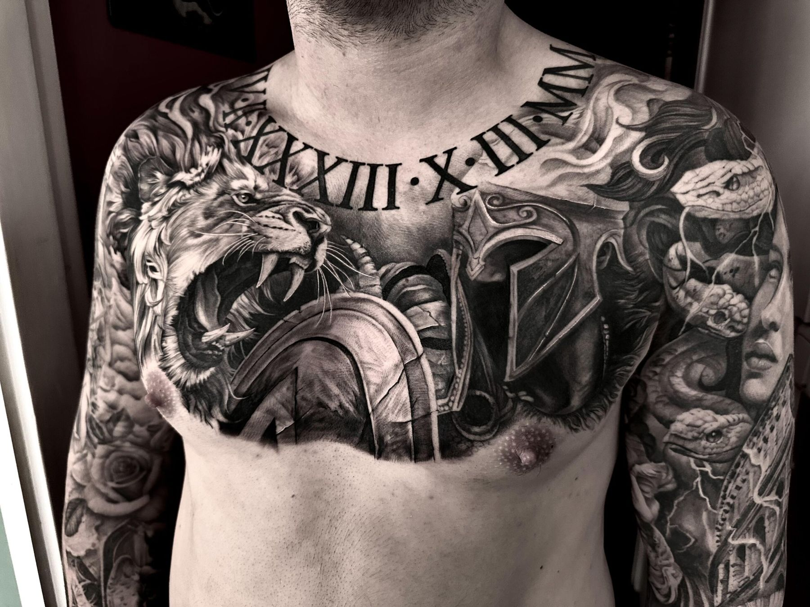
Tattoos in allerlei stijlen, sinds 2011 in Roosendaal. We nemen de tijd om jouw idee om te zetten in een ontwerp dat je met trots draagt.
Twee ervaren artiesten, elk met een eigen specialiteit. Van black & grey en mandala's tot fineline, oldschool en custom designs.

Grote black & grey tattoos met perfecte lijnen en vloeiende, realistische schaduwen. Al sinds zijn 18e volledig toegewijd aan het vak.
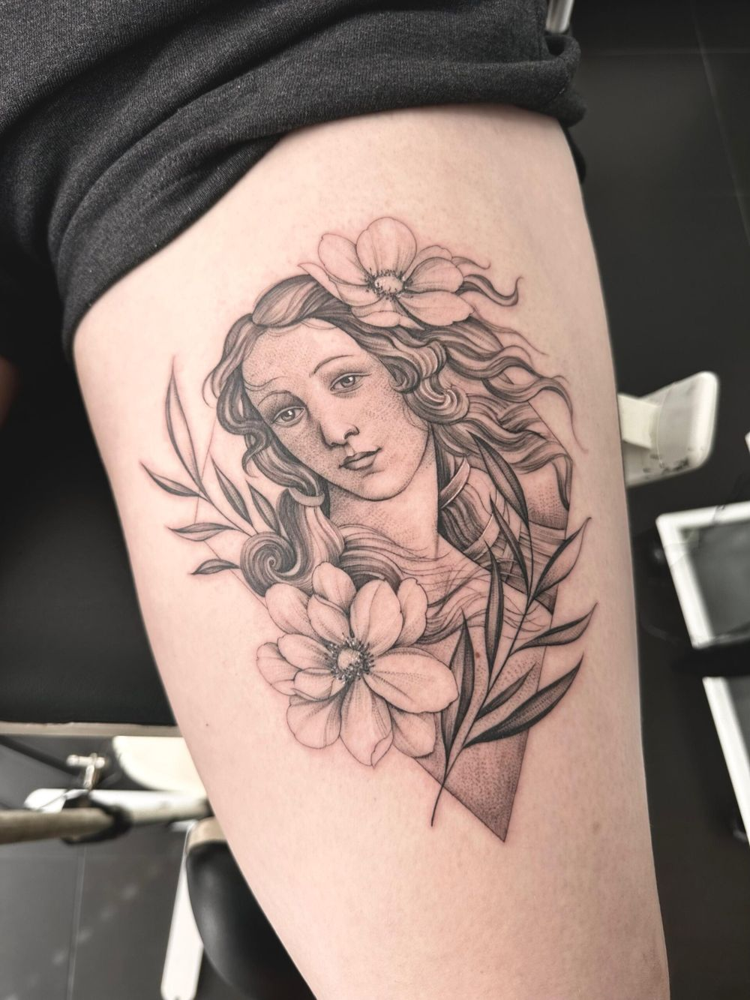
Precisie, elegantie en oog voor detail. Subtiele lijnen en verfijnde composities, maar ook open voor bloemen, realisme en symbolische ontwerpen.
Elke tattoo is maatwerk, met zorg ontworpen en helemaal afgestemd op de wens van de klant.
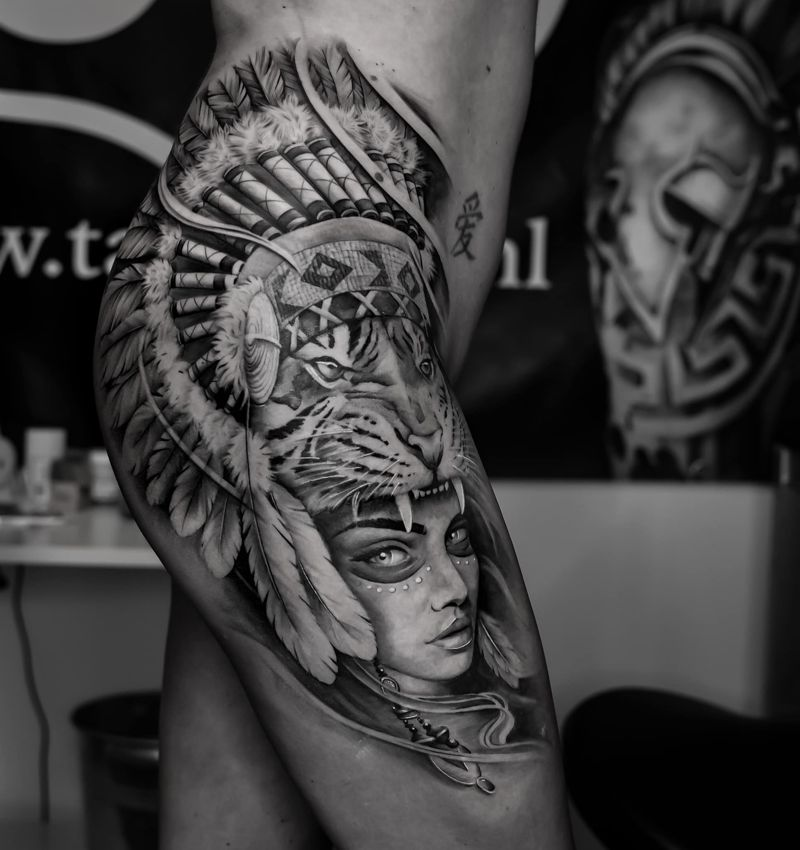
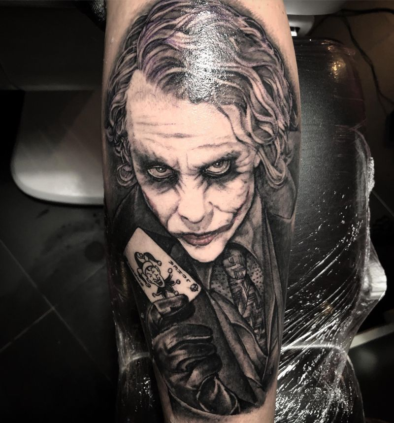
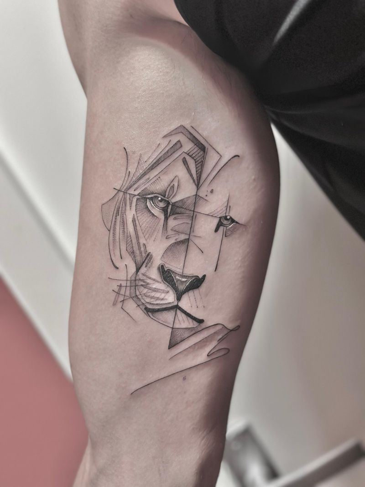
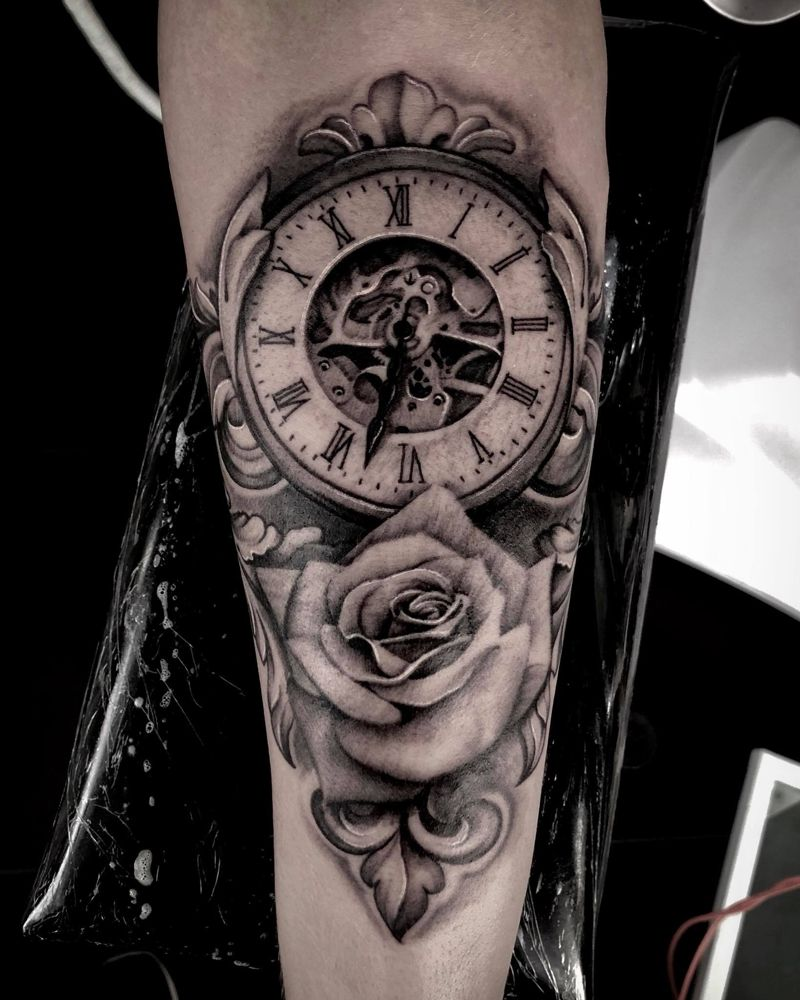
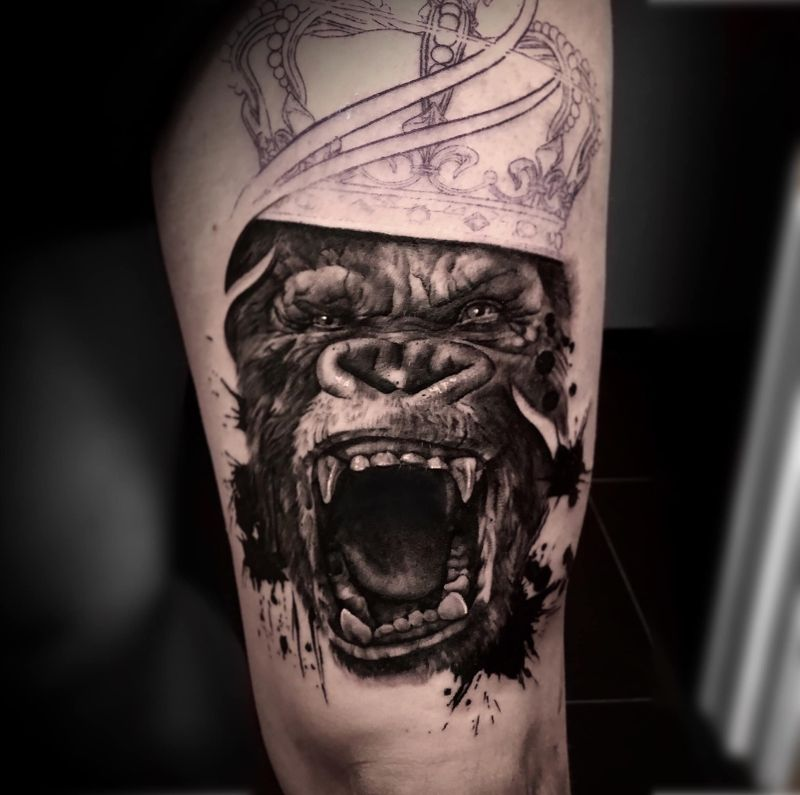
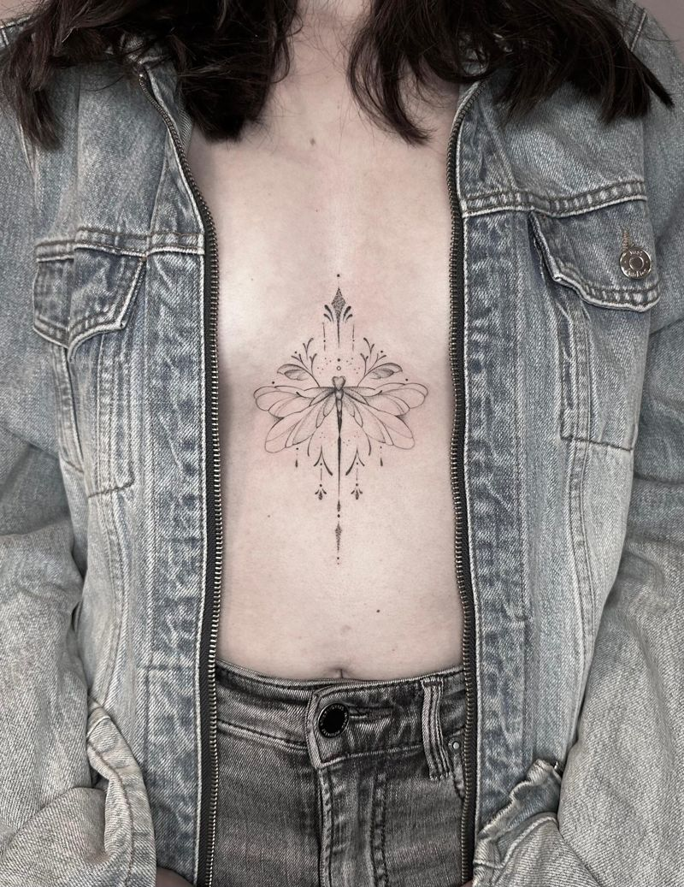
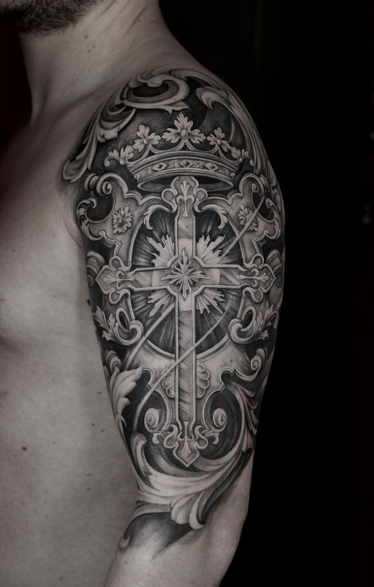
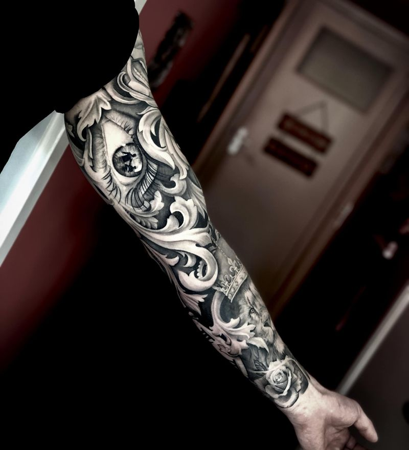
Op Instagram plaatsen we regelmatig foto's en video's van ons werk. Zo zie je precies hoe we te werk gaan.
Bekijk meer op Instagram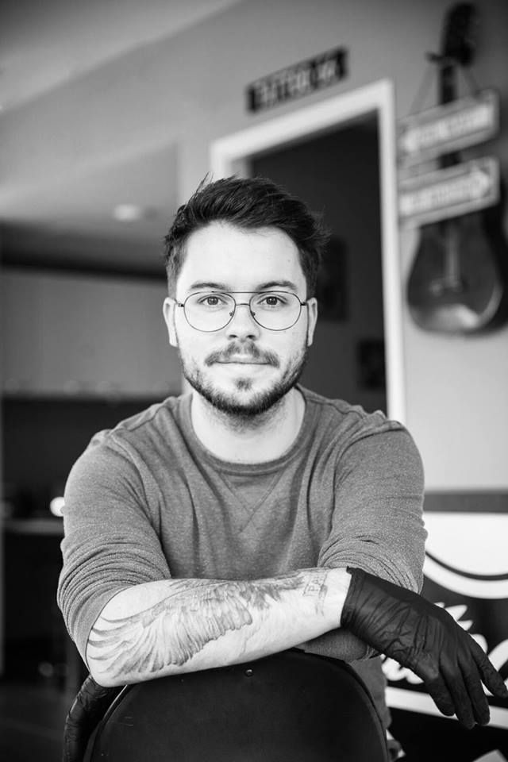
Zodra je Tattoo 66 binnenstapt, voelt het alsof je even teruggaat in de tijd. De shop is volledig ingericht in jaren '50 stijl, met oude meubels, warme kleuren, vintage details en muziek op de achtergrond.
Of je nu voor je eerste tattoo komt of al jaren inkt op je huid draagt: iedereen is welkom. We nemen de tijd om te luisteren, mee te denken en jouw idee uit te werken.
"Onze deur staat altijd open voor wie op zoek is naar kwaliteit én gezelligheid."
We werken op afspraak, maar het begint altijd met een persoonlijk gesprek in de shop.
Loop binnen voor een vrijblijvend gesprek. We bespreken je idee, geven advies en koppelen je aan de artiest die het beste bij jouw stijl past.
We maken een uniek ontwerp. Ben je tevreden, dan plannen we direct een datum. Met een aanbetaling reserveer je je plek.
Op de dag zelf zorgen we voor een ontspannen sfeer. Na het zetten krijg je duidelijke uitleg over de nazorg, zodat je tattoo mooi blijft.
Voor het zetten van een tattoo werken we altijd op afspraak. Maar je bent van harte welkom om zonder afspraak langs te komen voor een intakegesprek of om je wensen te bespreken. Dan kijken we samen rustig wat mogelijk is en plannen we direct een datum.
De prijs hangt af van het ontwerp, de grootte, plaatsing en stijl. Kleine tattoo's beginnen vanaf zo'n €80, maar we maken altijd eerst een inschatting tijdens het intakegesprek. Zo weet je precies waar je aan toe bent, zonder verrassingen achteraf.
Een tattoo voel je zeker, maar hoe heftig het is verschilt per persoon en per plek op het lichaam. We zorgen dat je je zo comfortabel mogelijk voelt, nemen de tijd en houden altijd rekening met je grenzen. Voor veel mensen valt het uiteindelijk mee.
We houden van persoonlijk contact. Bellen of langskomen werkt het snelst.
Heb je een idee voor een tattoo? Loop binnen voor een vrijblijvend gesprek, ook zonder afspraak. We bespreken je wensen en plannen direct een datum in.
Liever eerst even bellen of een appje sturen? Dat kan natuurlijk ook.
Hulsdonksestraat 1
Roosendaal
06 53 54 08 51
info@tattoo66.nl
Mailen kan, maar door de drukte in de shop duurt een reactie soms wat langer.
Melvin is de eigenaar van Tattoo 66 en al sinds zijn 18e volledig toegewijd aan het tatoeëren.
Zijn specialiteit: grote black & grey tattoos met perfecte lijnen en vloeiende, realistische schaduwen.
Asha is een veelzijdige tattoo-artist met een duidelijke liefde voor fineline. Haar werk kenmerkt zich door precisie, elegantie en oog voor detail: subtiele lijnen, verfijnde composities en een rustige uitstraling.
Naast fineline staat ze open voor uiteenlopende opdrachten. Ze vindt het belangrijk om samen met de klant tot een ontwerp te komen dat écht past bij hun verhaal en persoonlijkheid.